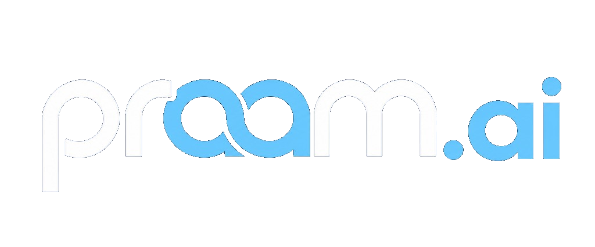

Healthcare
ArokiyaMedX brings clinical intelligence into the governed workflows where care teams need it.
- Care-path intelligence
- Compliance-aware automation
- Evidence-linked decisions

Get started ↗Industries
Purpose-built systems for complex operating environments — grounded in the decisions, controls, and processes that matter.
Industries we serve
ArokiyaMedX brings clinical intelligence into the governed workflows where care teams need it.
PRISM turns sourcing inputs and production requirements into governed procurement workflows.
The Engineering Productivity Bot gives product and platform teams governed AI support across delivery.
Knowledge Studio gives learning and operations teams grounded answers from their own policies and content.
Next step
Tell us about your operating environment and where AI should create leverage.